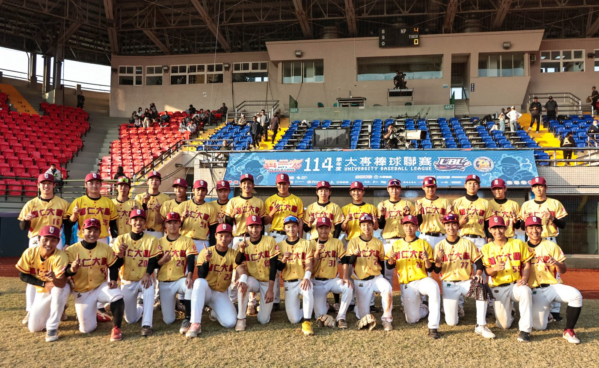

01我的故事
輔仁大學棒球隊團隊簡介
輔仁大學棒球隊於民國64年，奉時任董事長蔣宋美齡女士的指示成立，專為招收以棒球技術優異經教育部甄選保送至本校體育學系就讀的學生。自成立以來，近五十年的歷程中，棒球隊與多家企業合作，致力於培養優秀的棒球人才。合作企業包括葡萄王股份有限公司、榮民工程事業管理處、養樂多股份有限公司、中興保全、泰安產物保險公司及台灣運彩等。
早年，輔大棒球隊與葡萄王股份有限公司進行建教合作，培養出不少棒球人才，這些人現多活躍於體壇，成為國內棒球界的中堅力量。同時，當年風靡一時的「梅花旗校際對抗賽」（輔大對文大），至今仍是棒球界人士與熱心球迷津津樂道的話題。
民國70年起，棒球隊與榮民工程事業管理處合作，民國75年與養樂多股份有限公司攜手，民國88年起與中興保全公司合作，民國95年獲泰安產物保險公司贊助，並於民國109年透過教育部體育署的運動媒合平台與台灣運彩合作。這些合作不僅深化了輔仁大學棒球隊的發展基礎，也為球隊的長期發展注入了新動能。
近五十年來，輔仁大學棒球隊在各企業的支持下，培育出眾多優秀選手，不僅多次入選國家代表隊，為國爭光，更有許多人成為傑出的職業棒球選手。此外，許多退役選手投入教練工作，致力於培育下一代棒球人才，並推動棒球運動的普及與發展，為台灣棒球界留下深遠的影響。

推薦理由
本棒球訓練計畫具備完整的專業訓練架構與穩定執行能量，能有效培育運動人才並累積具體訓練與賽事成果。
計畫執行過程結合公益推廣與正式賽事參與，可於球衣、訓練裝備、宣傳素材及賽事轉播中呈現合作夥伴之 Logo，提供具正向形象且具體可見的品牌曝光。
透過運動專業、社會責任與媒體能見度的整合，本計畫可為企業與平台創造長期、穩定且具影響力的合作價值。